Some bedrooms look pretty. Others make you want to cancel every plan you have and stay under the covers until further notice. The difference usually comes down to atmosphere, and these cozy bedroom ideas can help build that feeling without turning the room into a pile of blankets and beige pillows.
The bedroom should feel like the softest part of the home. Warm when you walk in, comfortable the moment you sit down, and peaceful enough that your brain finally gets the hint that it can stop thinking about tomorrow's to-do list.
So what actually makes a bedroom feel cozy? Color, texture, lighting, bedding, furniture placement, and a little personality all play a role. None of it requires a huge bedroom or an enormous decorating budget to pull off.
The eighteen ideas below are listed starting with the smallest, most personal touches and working back toward the bigger foundational choices, like color and the bed itself, that tend to take longer to settle into place.

How to Make a Bedroom Cozy Without Spending a Lot
A full bedroom overhaul isn't actually necessary here. Starting with the pieces that affect comfort the most gets you most of the way there on its own.
- Change the bedding before replacing any furniture
- Add warm bedside lighting instead of relying on one ceiling fixture
- Layer inexpensive textiles such as throws, cushions, and rugs
- Remove visual clutter from nightstands and open surfaces
- Add curtains to soften hard windows and walls
- Bring in natural materials such as wood, cotton, linen, and rattan
Textiles tend to give you the biggest transformation for the least money. A new duvet cover, a chunky throw, and two oversized pillows can completely change the way an existing bed looks.
And before buying anything at all, try moving things around first. Sometimes the best bedroom makeover costs absolutely nothing.
Should You Use Dark Colors in a Cozy Bedroom?
Absolutely, if that's the direction you're drawn to. Deep olive, chocolate brown, charcoal, navy, and muted terracotta can all create an incredibly intimate bedroom.
A darker color on just one wall, rather than the whole room, tends to work especially well. It gives the bed a visual anchor without turning the bedroom into a cave. Unless the cave experience is actually the goal. No judgment there.
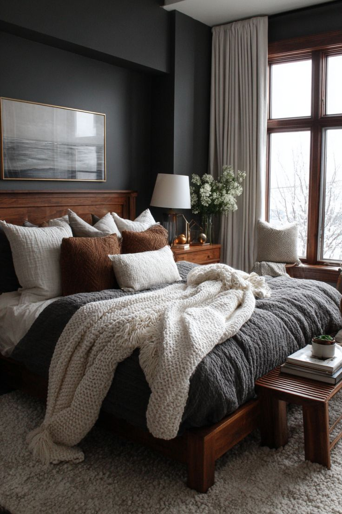
Which Colors Make a Bedroom Feel Cozy
Color can completely change the personality of a bedroom. For a cozy atmosphere, warm neutrals, muted earth tones, creamy whites, dusty pinks, soft taupes, warm grays, and gentle greens all tend to work well.
The whole room doesn't need to go dark to feel intimate. A warm off-white bedroom with layered bedding can feel just as cozy as a dramatic charcoal one.
The trick is choosing colors with enough warmth to soften the room without making it feel heavy. A bedroom with limited natural light does better with creamy beige, warm white, mushroom, or soft taupe, while a sunnier room can handle deeper colors without tipping into gloomy.
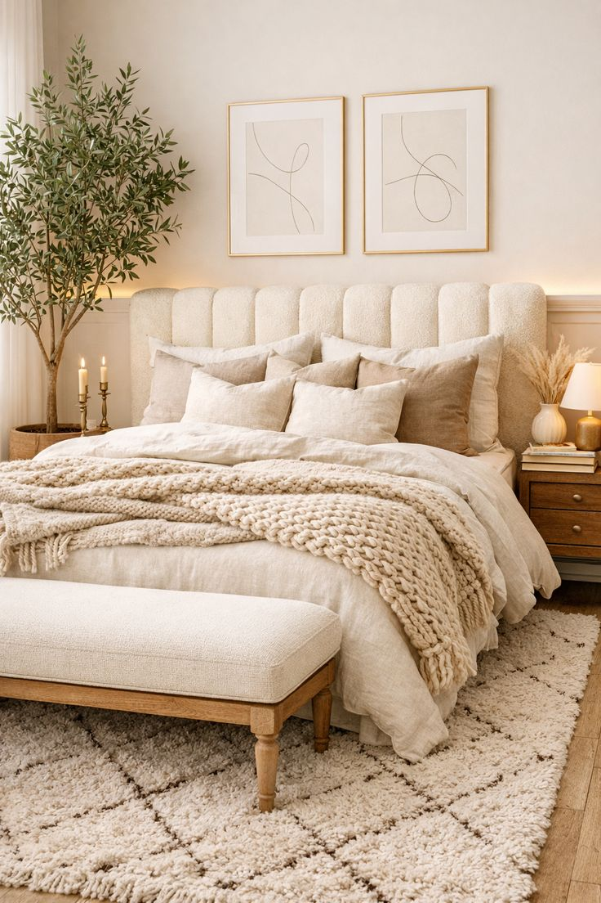
What Actually Makes a Bedroom Feel Cozy
Cozy doesn't simply mean adding more stuff. Too many decorative pieces can actually make a bedroom feel visually noisy instead of relaxing.
A cozy bedroom usually combines soft textures, warm lighting, calming colors, comfortable bedding, and a layout that feels easy to live in. Think of it as layers: the walls create the background, the furniture creates structure, and the textiles provide the softness.
Walking into a room with beautiful furniture that somehow feels like nothing at all is a familiar experience. A cozy bedroom needs more than attractive furniture alone, a genuinely relaxing environment matters just as much as how the room looks, and comfort should guide the decisions, not just appearance. A beautiful bedroom that feels uncomfortable will never become anyone's favorite room in the house.
That's worth sitting with for a second, because it's easy to shop for a bedroom the same way you'd shop for a living room, chasing a look instead of a feeling. The two don't always overlap, and a bedroom is really the one room where feeling should win.
18 Cozy Bedroom Ideas for the Ultimate Relaxing Retreat
1. Finish the Room With Personal Details
The final layer should feel personal. Add whatever makes the room feel like somewhere you actually want to return to.
A stack of favorite books, framed photographs, a handmade ceramic vase, a vintage mirror, a sentimental blanket, or artwork you genuinely love all count.
These details matter because a cozy bedroom shouldn't look like a showroom. It should tell your own story. A simple bedroom filled with meaningful pieces will always beat a perfectly styled room that feels completely impersonal.
Give it time, too. Personal pieces tend to accumulate naturally over months and years rather than arriving all at once from a single shopping trip, and a room that grows this way almost always feels more convincing than one that was finished in a weekend.
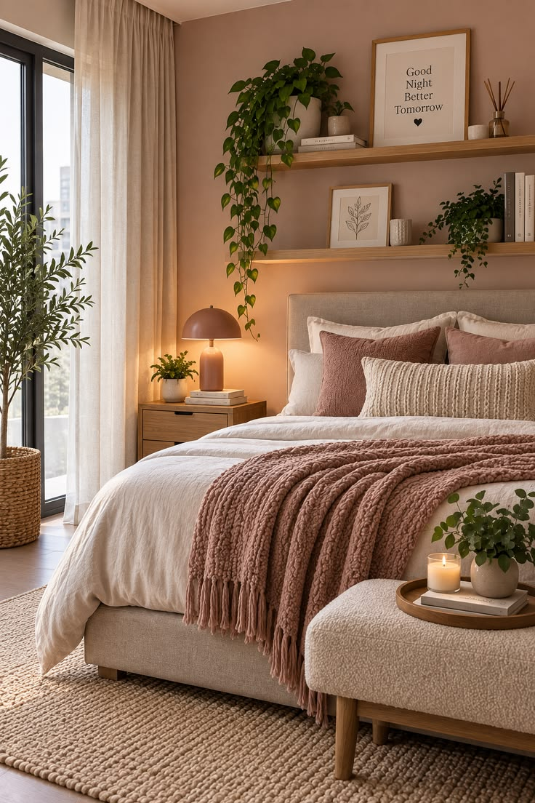
2. Build a Low-Clutter Layout
Sometimes the best cozy bedroom move involves removing something rather than adding something.
Look around the room and identify whatever makes the space feel crowded. Remove furniture that blocks movement, clear unnecessary items off surfaces, and give everything else a proper home.
Leaving breathing room around the bed matters, especially late at night. A cluttered bedroom genuinely makes it harder to relax and unwind, and a slightly emptier bedroom often feels more luxurious than one packed with decor. Every corner doesn't need to be filled just because the furniture store supplied enough accessories to do it.
A good test is standing in the doorway and counting how many things catch your eye at once. Past three or four, the room is probably working harder than it needs to.
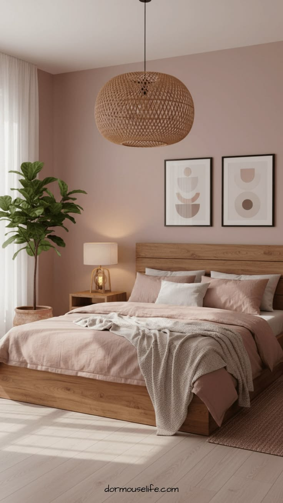
3. Add Blackout Curtains for a More Restful Feel
Streetlights, early morning sunlight, or bright outdoor lighting leaking into the room can undercut an otherwise cozy bedroom fast. Blackout curtains fix that and make the room feel dramatically more restful.
They also add another layer of softness around the windows. Neutral curtains keep the look calm, while a deeper color adds more drama.
A dark, quiet, cool bedroom is consistently recommended for better sleep, which means the curtains end up serving both the decorating plan and the bedtime routine at once. That's a pretty good trade for one purchase.
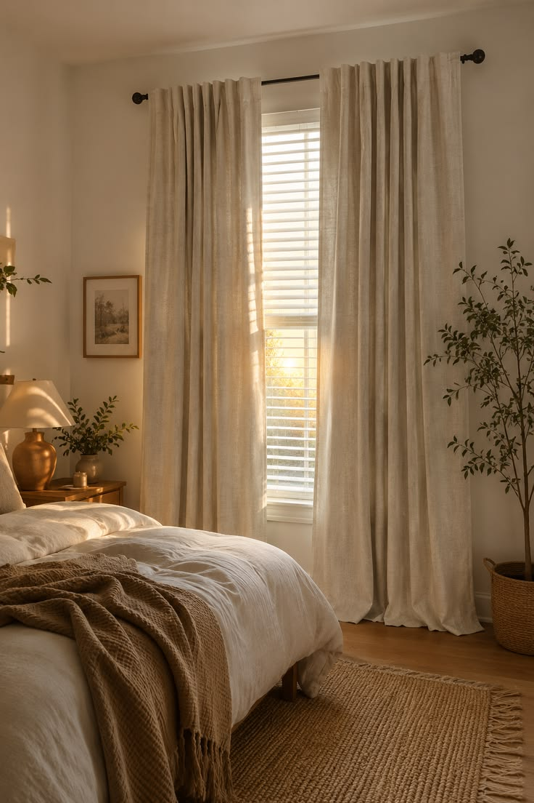
4. Keep the Room Cool, Dark, and Quiet
This is where cozy bedroom design actually meets sleep comfort. A beautiful bedroom should support good rest too, not just look good.
Keeping the room comfortably cool, quiet, and dark matters more than most decorating choices combined. Temperature, noise, light, mattress comfort, and bedding all influence how well the room actually functions as a bedroom.
A temperature somewhere around 65 to 68 degrees Fahrenheit tends to suit most sleepers, though personal comfort varies. Breathable bedding, better airflow, curtains that block daytime heat, and a fan all help if the room runs warm.
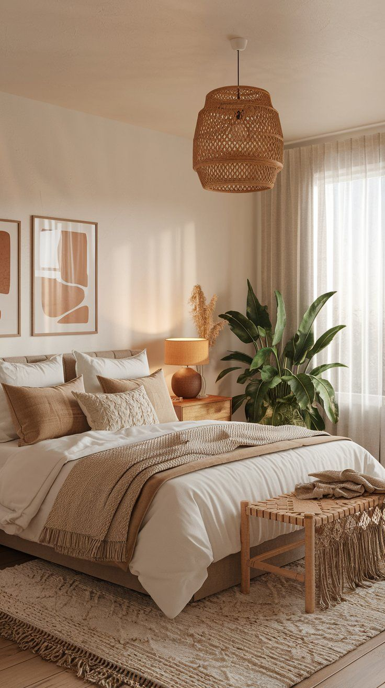
5. Add Texture to the Walls
Texture can make a simple bedroom feel considerably more expensive. Wood paneling, limewash-style paint, wallpaper, board-and-batten details, or fabric wall panels all create that effect.
Covering every wall isn't necessary. Texture behind the bed alone usually delivers the biggest visual impact for the least effort.
Textured wallpaper in a warm neutral shade is the more subtle route, adding interest without competing against the bedding.
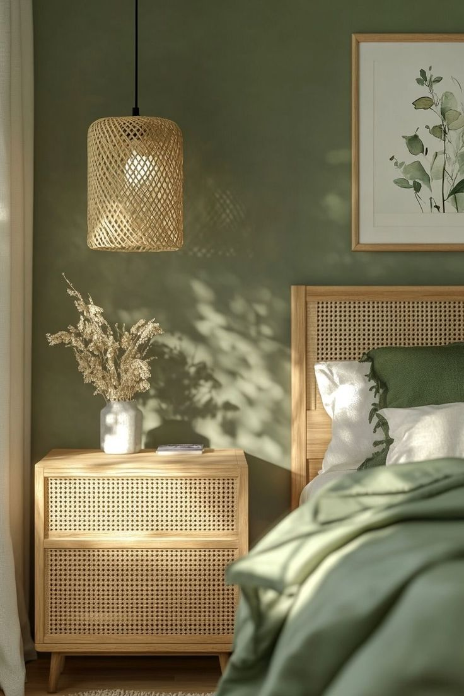
6. Add a Soft Bench at the Foot of the Bed
A bench at the end of the bed makes a bedroom feel more complete while giving you somewhere actually useful to sit or put on shoes.
Upholstered fabric leans softer, while wood leans toward a more natural bedroom feel.
In a smaller room, a narrow bench keeps enough walking space intact. The goal is a bedroom that feels cozy, not one that turns into an obstacle course.
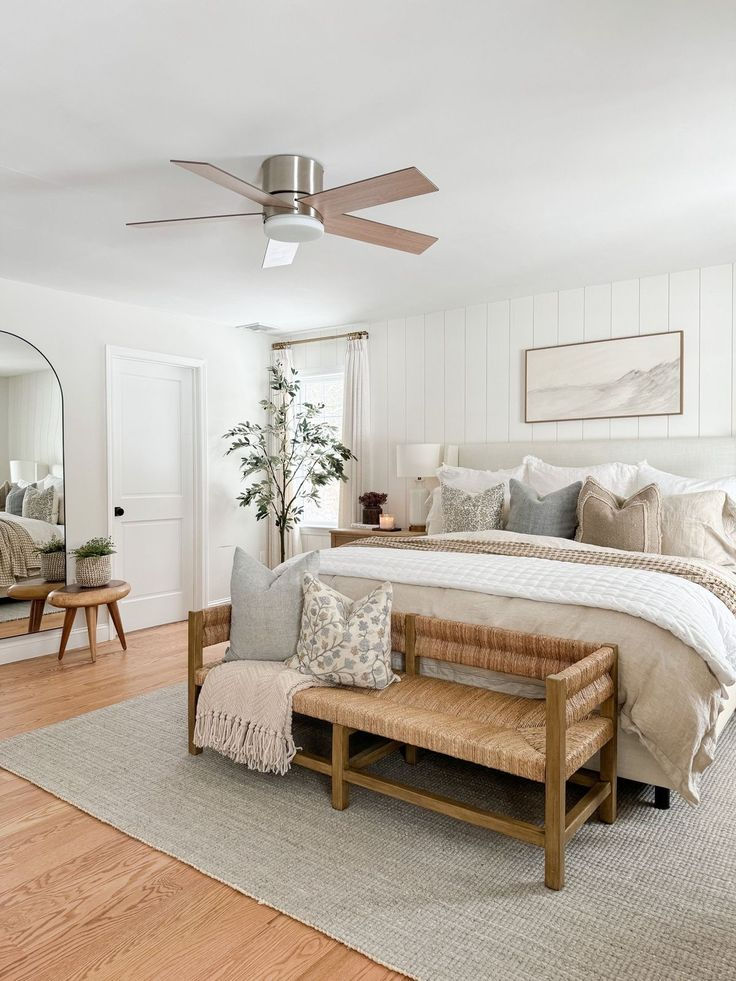
7. Keep the Nightstand Calm, Not Chaotic
A nightstand can either reinforce the cozy feeling or completely undo it.
Keeping only what actually gets used, a small lamp, a book, a water glass, a candle, and a decorative tray, creates enough visual interest without turning the surface into storage.
Chargers, paperwork, receipts, and random clutter belong somewhere else entirely. Nobody needs a visual reminder of every unfinished task right as they're trying to relax.
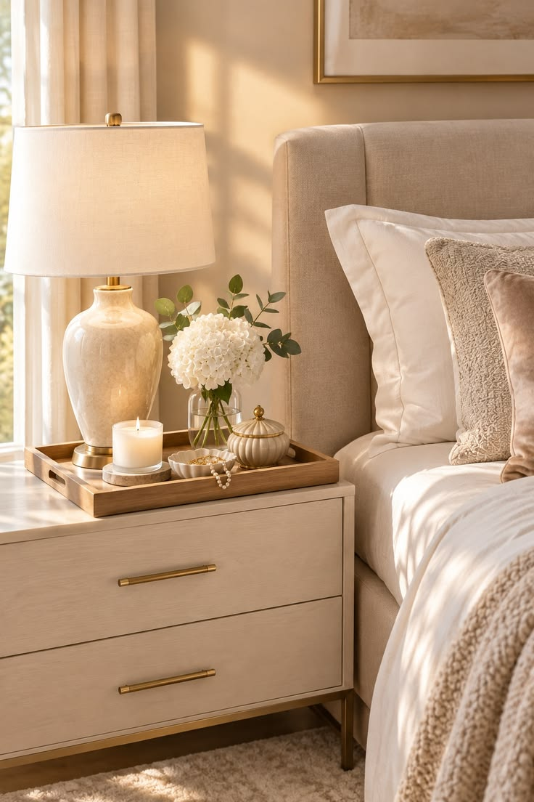
8. Use Wall Art to Add Personality
A cozy bedroom should still feel like an actual bedroom someone lives in. Blank walls can make even an expensive room feel unfinished.
Artwork that genuinely feels calming works best here, abstract landscapes, botanical prints, vintage pieces, soft line drawings, and personal photographs all fit.
A small gallery wall tends to read as more collected than one enormous piece. Keeping the frames connected through a similar color or material holds the whole arrangement together.
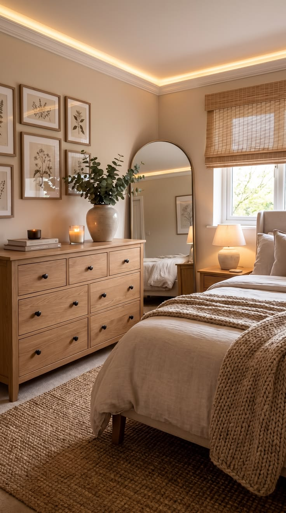
9. Add Soft Greenery
Plants make a bedroom feel more alive without adding visual clutter. One larger plant in an empty corner, or several small ones across shelves and nightstands, both work.
Low-maintenance varieties or realistic artificial plants are the better call for anyone who struggles to keep plants alive. The goal is a relaxing visual environment, not a new horticultural hobby.
One or two plants usually works better than turning the whole bedroom into a jungle.
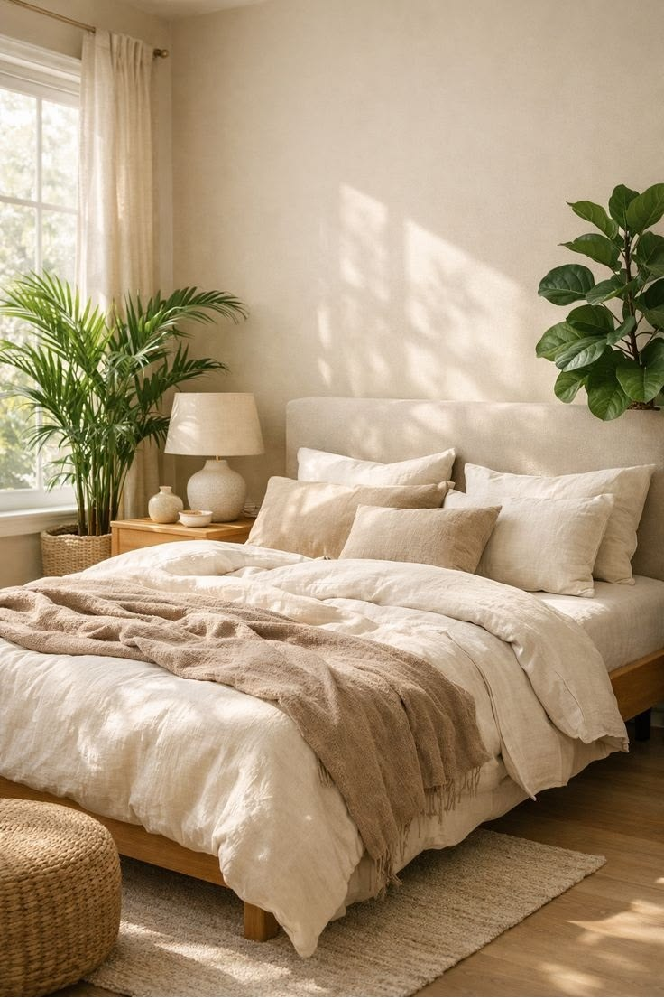
10. Build a Cozy Reading Corner
An empty corner is an easy candidate for somewhere actually worth using. A comfortable chair, a small side table, a floor lamp, and a soft throw turn it into exactly that.
A huge bedroom isn't required either. A compact accent chair works beautifully beside a window or tucked into an unused corner.
It might genuinely become a reading spot. It might also quietly turn into a clothes pile eventually. Either way, at least the clothes get somewhere stylish to land.
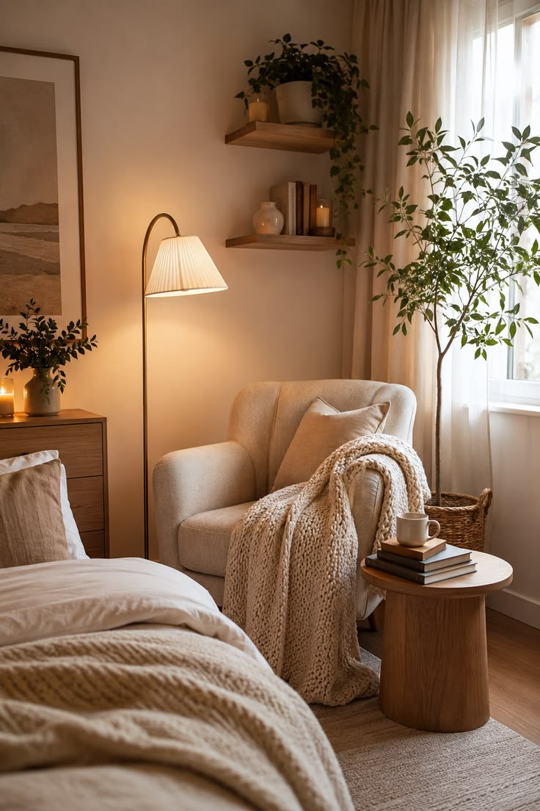
11. Bring Natural Wood Into the Room
Wood adds a kind of warmth that painted furniture often can't replicate. A wooden nightstand, bench, bed frame, stool, or picture frame all ground a neutral bedroom noticeably more.
Light oak paired with creamy bedding and warm beige walls feels relaxed without looking overly styled.
Smaller wooden accessories work too, for anyone not ready to replace furniture outright. Even a wooden tray on the nightstand adds a bit of that same warmth.
12. Use a Statement Headboard
A large upholstered headboard can make a bedroom feel instantly more luxurious, and it gives the bed a strong visual focal point in the process.
Curved shapes, boucle fabric, linen, velvet, or warm neutral upholstery all work. A bedroom already carrying plenty of pattern elsewhere does better with a simpler headboard.
Renters, or anyone after a cheaper solution, can fake the effect with wall molding, fabric panels, or even a large piece of artwork hung behind the bed.
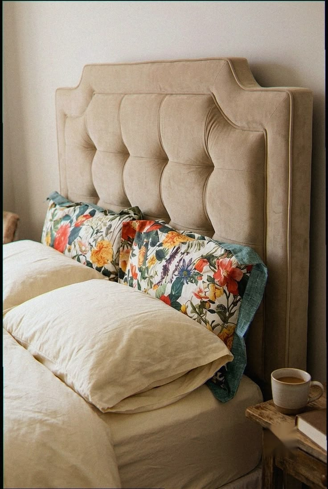
13. Add a Chunky Throw at the End of the Bed
This sounds like a tiny detail, but a throw can make a bed look dramatically more inviting almost on its own.
Folding a chunky knit blanket or soft woven throw across the bottom third of the bed does the trick. Leaving it a little imperfect works better than folding it with military precision.
A cozy bedroom should look genuinely lived in, not like a showroom nobody actually sleeps in.
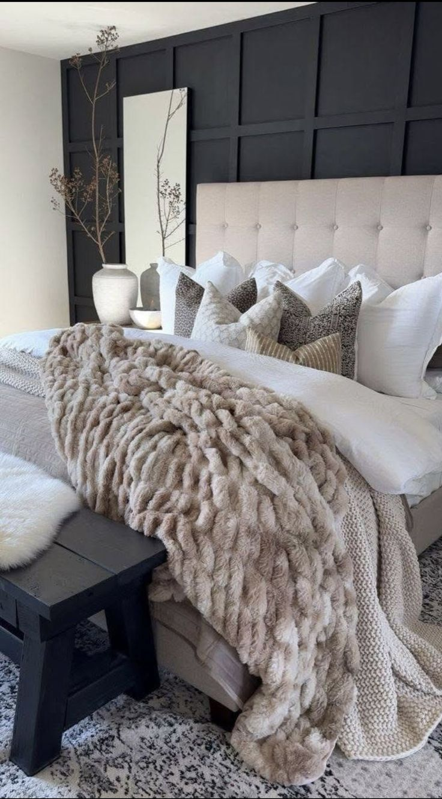
14. Hang Full-Length Curtains
Curtains do more than just cover a window. They soften the room, add height, and bring in another layer of texture.
Hanging the curtain rod slightly above the window frame, letting the fabric fall close to the floor, makes the ceiling look taller and the whole bedroom feel more finished.
Linen-look curtains, cotton curtains, or heavier neutral fabrics suit a cozy look especially well. For anyone whose mornings start earlier than their alarm, blackout curtains behind the decorative layer block most of that outside light.
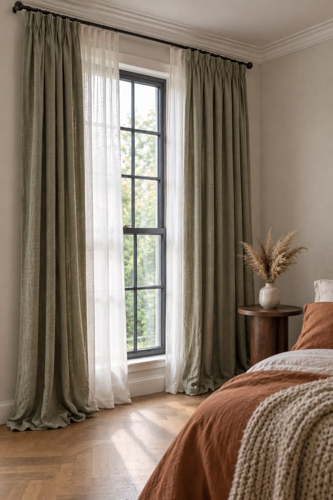
15. Layer the Floor With Rugs
A rug instantly changes how a bedroom feels underfoot. On hard flooring especially, a large soft rug can warm up the entire room.
Placing a large rug underneath the bed so it extends past both sides tends to work best. Smaller runners on each side of the bed are a reasonable substitute on a tighter budget.
Wool, cotton, jute, or plush textures all add real warmth without demanding much attention for themselves.
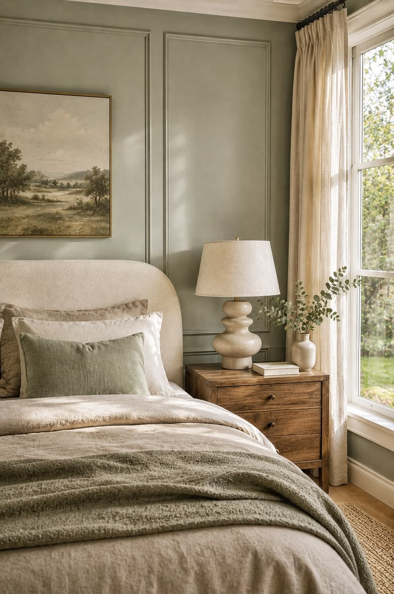
16. Add Warm Bedside Lighting
Harsh overhead lighting can ruin an otherwise beautiful bedroom in about three seconds flat. Multiple smaller light sources create real depth and make a room feel much softer once it's dark outside.
A warm table lamp on each nightstand, where the layout allows it, does a lot of the work. A floor lamp in a corner or a small reading light beside the bed fills in the rest.
A dark, quiet, comfortably cool bedroom tends to come with fewer sleep disruptions, so warm, low-intensity lighting in the evening, rather than bright white bulbs, actually supports the room winding down along with you.
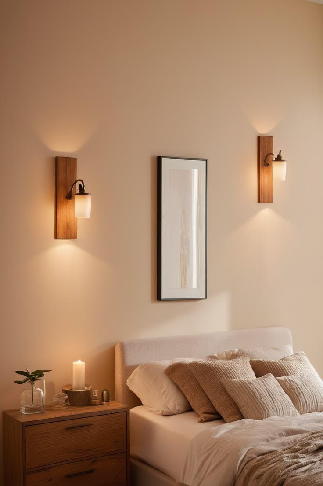
17. Choose Warm Neutral Colors for a Calm Room
Warm neutrals create one of the most reliable cozy bedroom looks, mostly because they leave so much room to play with texture.
Cream, oatmeal, beige, taupe, warm gray, mushroom, and soft brown all work, and nearly everything matches them later if the decor changes.
An all-neutral room that starts feeling too plain can take contrast easily, dark wood furniture, black accents, muted green, or a dusty rose pillow all add it back in without disrupting the base palette.
18. Layer the Bed With Soft, Oversized Bedding
If there's one place to start, it's the bed. It occupies a huge portion of the room, so changing how it looks changes the whole bedroom almost immediately.
Layering a duvet or comforter with a quilt, a folded throw, and several pillows works best when the textures come from different sources rather than one matching bedding set. The room ends up feeling far more relaxed and personal that way.
Cotton, linen, waffle textures, knitted throws, and soft velvet accents all work. Not all of them at once, though, two or three textures is usually enough to create real visual interest without overdoing it.
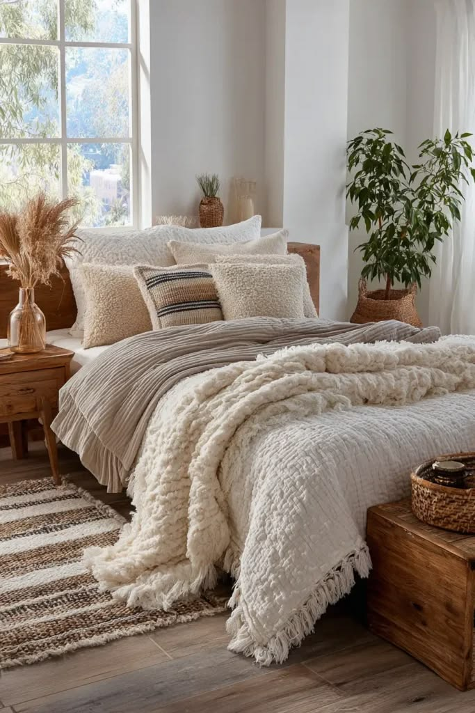
What to Avoid in a Cozy Bedroom
Building a cozy room doesn't mean following every bedroom trend that shows up online. Some popular choices actually make a room feel less relaxing, not more.
Too many competing patterns, extremely bright overhead lighting, oversized furniture blocking natural movement, and clutter left on every available surface are all worth avoiding.
Furniture chosen purely because it looks good in photographs is another trap. A bedroom needs to work in real life. Can you walk around the bed easily? Can you open the drawers? Can you reach the lamp without a small gymnastics routine? Comfort should win that argument over aesthetics every time.
How to Put These Ideas Together
All 18 ideas were never meant to be used at once. Trying to apply every single one could easily produce the opposite of what you actually want.
Starting with the biggest problem works better. A cold room needs textiles and warm lighting. A cluttered one needs less furniture and fewer accessories. A boring bed needs better bedding and one good throw.
For a room that already has good furniture in place, a few areas make the biggest difference on their own:
- Bedding: add layers and tactile fabrics
- Lighting: replace harsh overhead lighting with warm lamps
- Color: choose calming warm neutrals or muted colors
- Texture: add rugs, curtains, throws, and upholstered pieces
- Clutter: remove anything that doesn't serve a purpose
- Personality: add artwork, books, plants, and meaningful accessories
Working gradually is also fine. Start with the bed, then lighting, then texture. A real difference usually shows up before the whole room is even finished.
Final Thoughts on Creating a Cozy Bedroom
The best cozy bedroom ideas were never about making a room look perfect. They're about making it feel comfortable, warm, personal, and genuinely enjoyable to be in.
Start with the bed, since it creates the biggest visual impact. Add warm lighting, soft textures, calming colors, curtains, rugs, and a few personal details. Then step back and remove anything that makes the room feel crowded.
None of this needs a designer bedroom or an enormous decorating budget. A freshly made bed, a warm lamp, a soft blanket, and a quiet room can do more than an entire shopping spree ever could.
And if any of this makes staying in bed all day feel like the better option, that's a completely reasonable response.
Give it a few weeks before judging the result. A bedroom usually needs a little time to actually feel settled, and the version that exists after you've lived in it for a month is almost always better than the one you styled on day one.